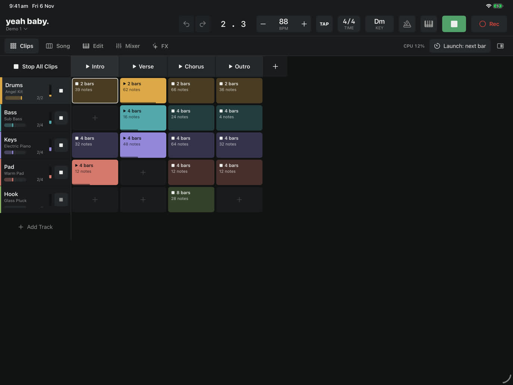
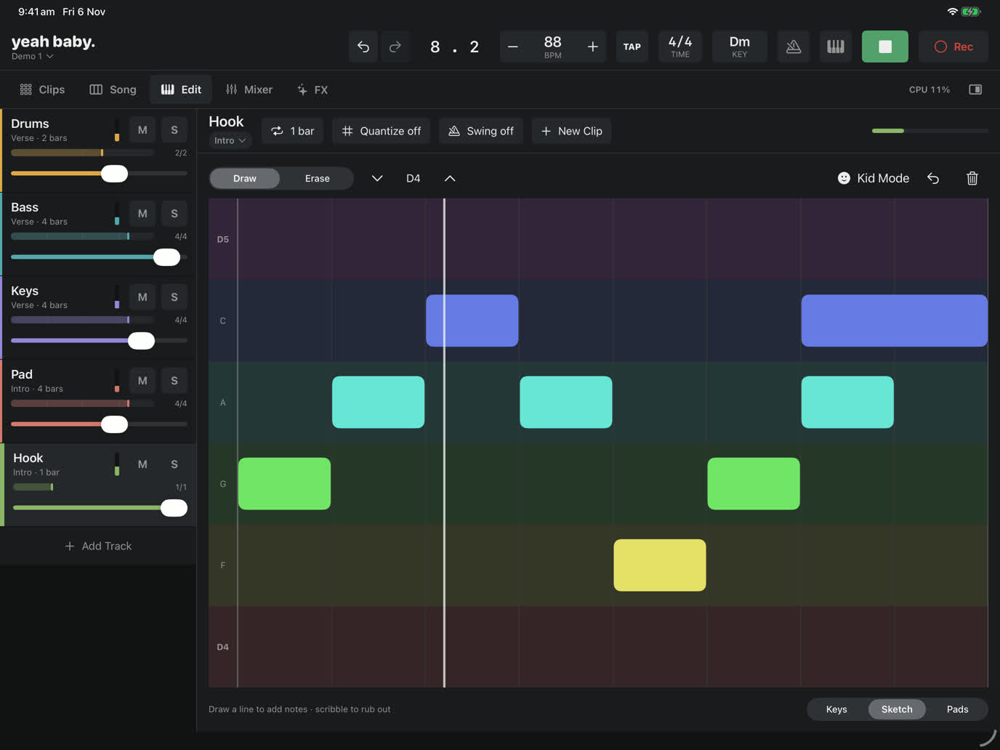

yeah baby.
Make something worth repeating.
A groovebox and looper for iPad. Make a beat, loop it, and play over the top, without menus getting in the way of the music. Free, with no ads, no accounts and no tracking.


What it does
- Jam first. Program a drum pattern, press Play, and play any instrument over it. Nothing records until you ask, and Capture brings back what you just played.
- Loops with their own lengths. Drums can loop every bar while the piano loops every eight, all on one clock.
- Pads, keys and Sketch. Draw a melody with your finger; Kid Mode keeps it in tune and in time.
- Sounds included. Eleven drum kits, a sampled grand piano, strings, brass and a deep built-in synth.
- Effects you can play, scenes that become songs, and export to WAV or M4A.
- MIDI controllers with MIDI Learn, and Audio Unit (AUv3) instruments and effects.
Support
Questions, bug reports or ideas? Email yeahbaby@larritt.com. It helps to say which iPad you have and what you were doing when something went wrong.
Getting started: open Demo 1 on the home screen and press Play. Mute tracks, change sounds, or tap Edit to see how it's made.
No sound? Check the iPad isn't on silent and the volume is up, and that nothing else is using audio. If a Bluetooth speaker is connected, sound goes there.
MIDI keyboard not working? Tap the keyboard button in the top bar, or choose MIDI Devices & Assignments from the yeah baby. menu, to see what's connected. USB keyboards may need a powered adapter on older iPads.